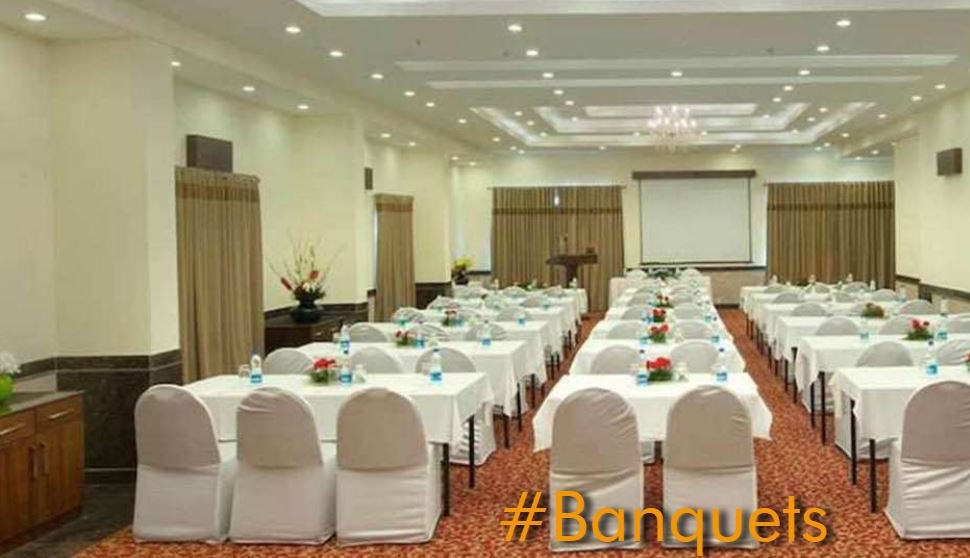

<div class="container project-view">
    
	<div class="row">
        <div class="col-md-8 project-images">
            
            
            
            
            
            
            
        </div>
        <div class="col-md-4">
            <div class="project-info">
                <h2>Royal Orchid Fort Resort</h2>

                <div class="details">
                    <div class="info-text">
                        <span class="title">Location</span>
                        <span class="val">Mussoorie</span>
                    </div>

                    <div class="info-text">
                        <span class="title">Category</span>
                        <span class="val">Luxury Wedding</span>
                    </div>
                </div>
					The hotel is situated at close proximity to the major tourist attractions such as Gun Hill Point, Mossy Falls and Mussoorie Lake. It is also one of those resorts in Mussoorie, which is around the city’s major business hubs.
					<br/><br/>
					Royal Orchid Fort Resort houses numerous banquet halls with modern facilities to ensure hassle-free meetings and events. It also features 56 rooms and suites that have the comforts for all modern day travellers. It also features a dining outlet, ‘Pinxx’, which is a multi-cuisine restaurant. It has a spa and a gym for your recreation.
            </div>
        </div>
    </div>
</div>